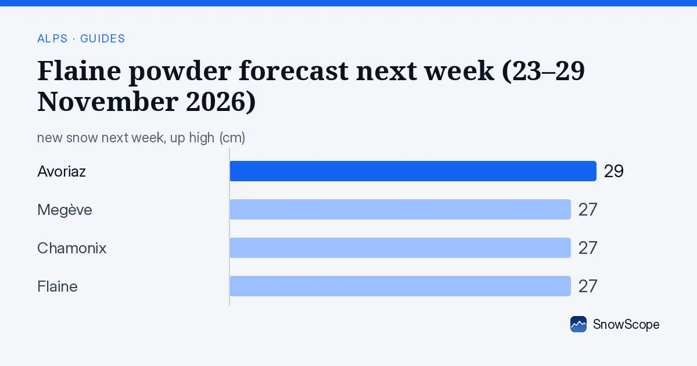

Flaine powder forecast next week (23–29 November 2026): 27 cm up top
Next week at Flaine runs from 23 to 29 November. The upper slopes will collect around 27 cm in the middle of the forecast range, though anywhere from 9 to 46 cm is possible. This snow arrives on a base of 94 cm already in place from this week, so you are skiing into established cover.
See the live snow forecast for Flaine in the SnowScope appSnow depth, powder alerts and the 3D map, free.
When the snow arrives at each height
At 2400 m near the summit, expect 27 cm spread across the week. The mid-slopes around 2000 m get the same amount, and down at 1600 m at the base, 26 cm lands. The forecast shows wide margins—9 to 46 cm at the top—because the exact track and intensity of Atlantic storms are still uncertain.
The busiest days are Tuesday 24, Wednesday 25 (the strongest day with 8 cm mid-range, up to 11 cm in the high case), Thursday 26 and Sunday 29. Most other days add only 1 to 6 cm at the summit.

Base versus top: a consistent picture
Remarkably, the base level gets nearly as much snow as the top (26 cm against 27 cm). This means the snow line holds well below the lowest lift stations. If mild air does not arrive, you can expect continuous cover from the village all the way to Grandes Platières.
Flaine sits in an Atlantic-facing position in the northern French Alps, so it catches these systems earlier and more reliably than resorts further east. That geography is working in your favour next week.
How it stacks against the neighbours
Megève (18 km west) and Chamonix (20 km south) both sit at 27 cm for their upper slopes next week, identical to Flaine. Avoriaz (22 km north-west) edges slightly higher at 29 cm. All three are so close that forecast margins swallow the differences—they are essentially tied.
The similarity reflects a single weather system crossing the whole region at the same time. Your resort choice next week should depend on terrain and crowd, not snow depth.
Where to find the best powder
The Grandes Platières above the Flaine bowl collect snow from multiple directions and hold it. The shaded Flaine bowl itself, north-facing, is a natural powder trap after Atlantic storms. These two zones are your first choice for soft turns.
Lower down the Grand Massif, Samoëns and Morillon rely more on settling into the base snow already there. If temperatures climb mid-week, these lower sectors could soften or become skied quickly. Book your runs high and early if you want the freshest snow.
Reading the forecast range
The wide spread (9 to 46 cm at the top) reflects real uncertainty. Storm tracks shift, and intensity is hard to pin down more than a week ahead. The 27 cm middle value is your planning figure, but you should be ready for 20 cm or for 35 cm.
If the forecast narrows over the weekend before you travel, the picture will sharpen. The range will tighten as the storms approach, so check back closer to the dates if you can book flexibly.
Safety and stability on a young snowpack
This week's heavy fall (94 cm at the top since 17 November) will have settled and bonded by next week. You are not adding fresh snow to a bare slope. That matters for stability.
Before any off-piste skiing, read the French avalanche bulletin (BERA) for the Mont-Blanc massif. Young snow is sensitive to rapid temperature swings and new wind. The official report is your guide.
Tips for skiers
- Aim for Wednesday 25 or Thursday 26: both bring the heaviest single-day falls and offer the best chance of soft snow with reasonable visibility by the following morning.
- Ski high terrain (Grandes Platières, the Flaine bowl) early in each day before the lower slopes become tracked. Lower areas warm faster in late November.
- Keep the high-case forecast (46 cm at the top) in mind as an upside scenario, but plan equipment and terrain choices around the middle value of 27 cm so you are not caught out if snow is lighter.
- Check the BERA avalanche bulletin before leaving the resort boundary; next week's snow is fresh on a young season pack.
- Book with flexibility if you can; the forecast will be sharper by the weekend and may shift the best day by 24 hours.
About these numbers
Resort snow depths are the deepest snow on the resort's upper slopes on the date shown; they are estimates for an area, not a measurement at one point. Forecasts can change. Always read the official avalanche bulletin before going off-piste.
Cite this report
For research, teaching or the press: the numbers and charts are free to reuse under CC BY 4.0 with this citation.
SnowScope (2026), Flaine powder forecast next week (23–29 November 2026): 27 cm up top, https://snowscope.app/blog/en/2026/11/flaine-powder-forecast-next-week-23-29-november-2026.html, accessed 2026-11-16
SnowScope (Atlas Labs). (2026, November 16). Flaine powder forecast next week (23–29 November 2026): 27 cm up top. SnowScope snow reports. https://snowscope.app/blog/en/2026/11/flaine-powder-forecast-next-week-23-29-november-2026.html
BibTeX
@misc{snowscope2026flainepowderforecastnext,
author = {{SnowScope (Atlas Labs)}},
title = {Flaine powder forecast next week (23–29 November 2026): 27 cm up top},
year = {2026},
month = nov,
howpublished = {\url{https://snowscope.app/blog/en/2026/11/flaine-powder-forecast-next-week-23-29-november-2026.html}},
note = {Published 2026-11-16 11:28 UTC; accessed 2026-11-16}
}· CC BY 4.0 · Methods, data and tools →
Flaine: snow and temperature by height, this winter vs last (tools) →
Follow Flaine
Free: a message when fresh snow is coming, and the forecast every morning.
More snow reports

Ski the 131 km of runs in the Forêt Blanche this December with a six-day pass for 298 EUR.

Valloire-Valmeinier offers 131 km of runs and a 98 % chance of 30 cm of snow at mid-mountain by mid-December.

Turracher Höhe has 23 cm at mid-mountain on a typical 15 December, but only 39% of winters reach 30 cm there in mid-December. Data from 13 November 2026.